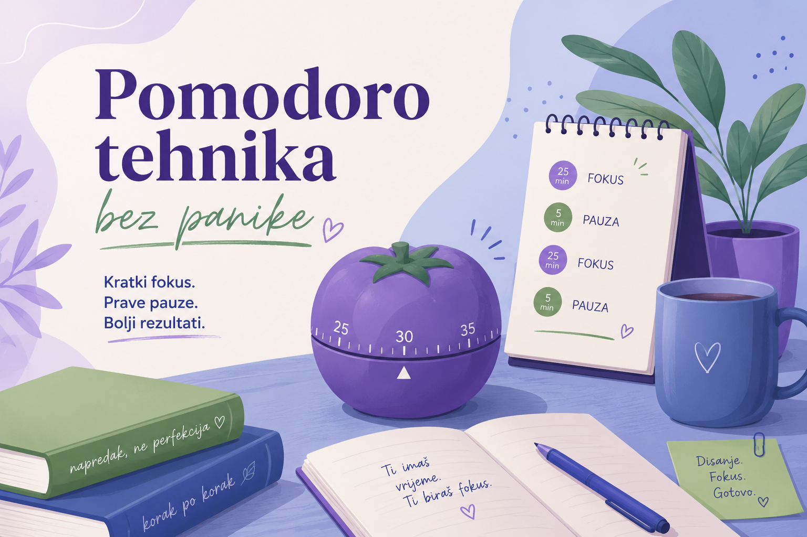
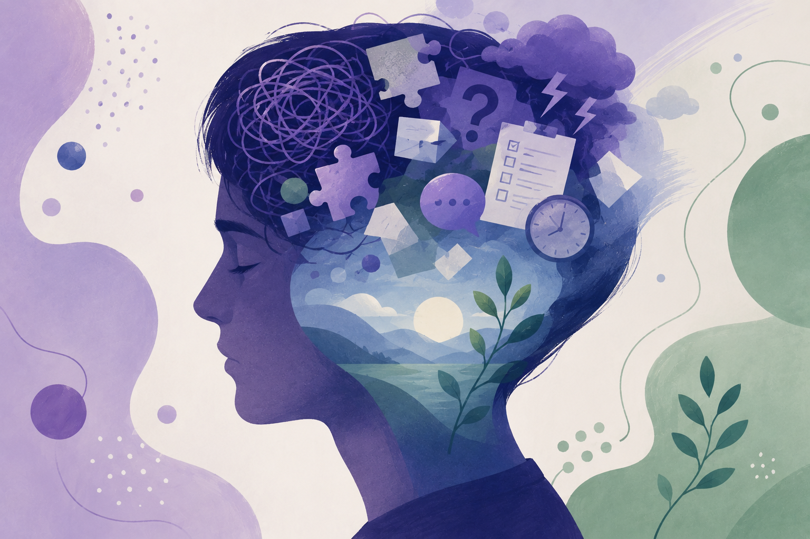
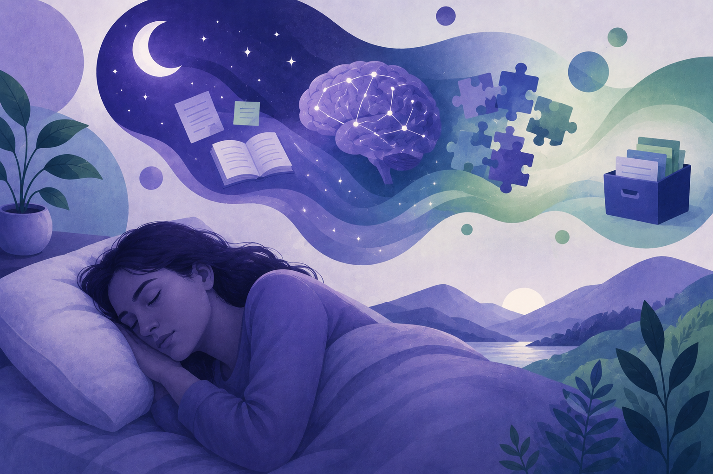
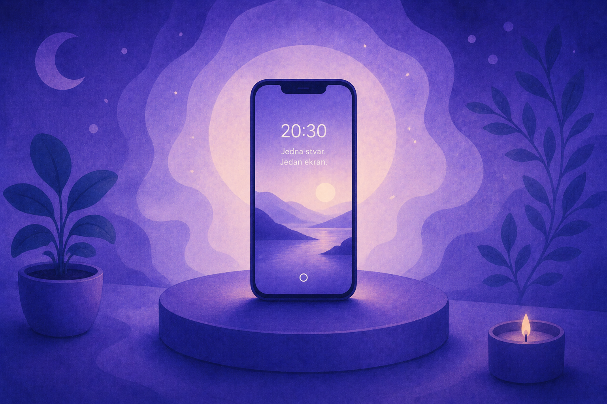
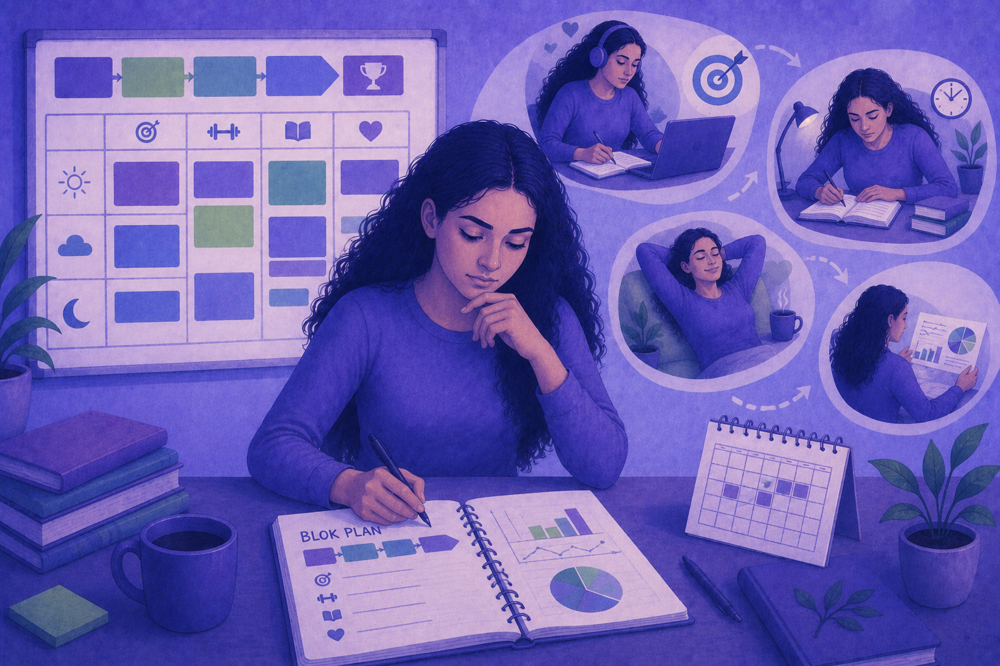
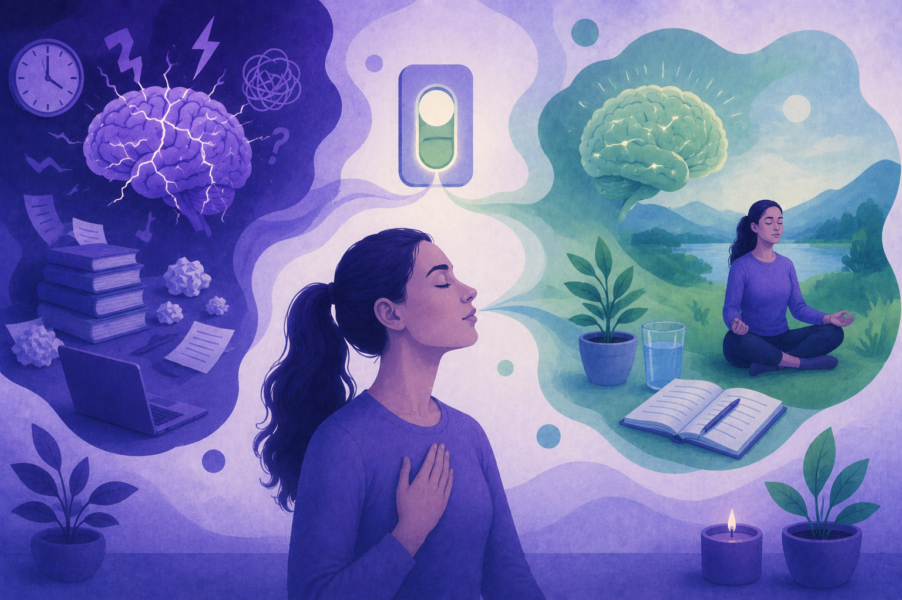
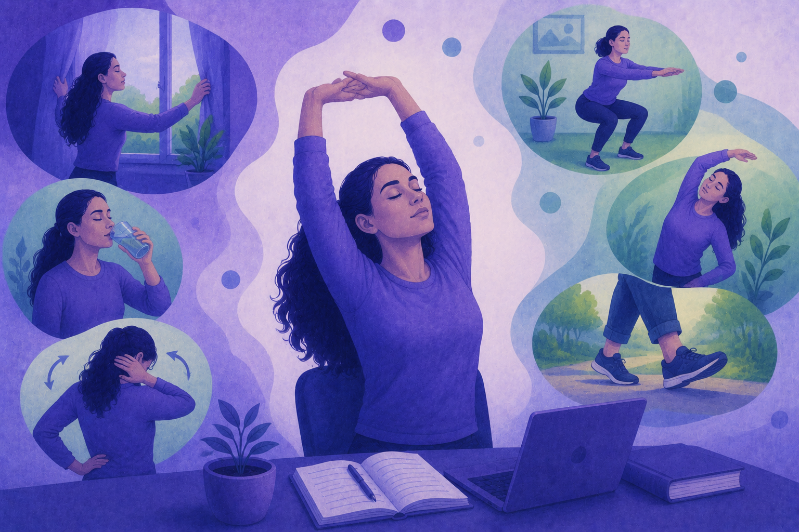
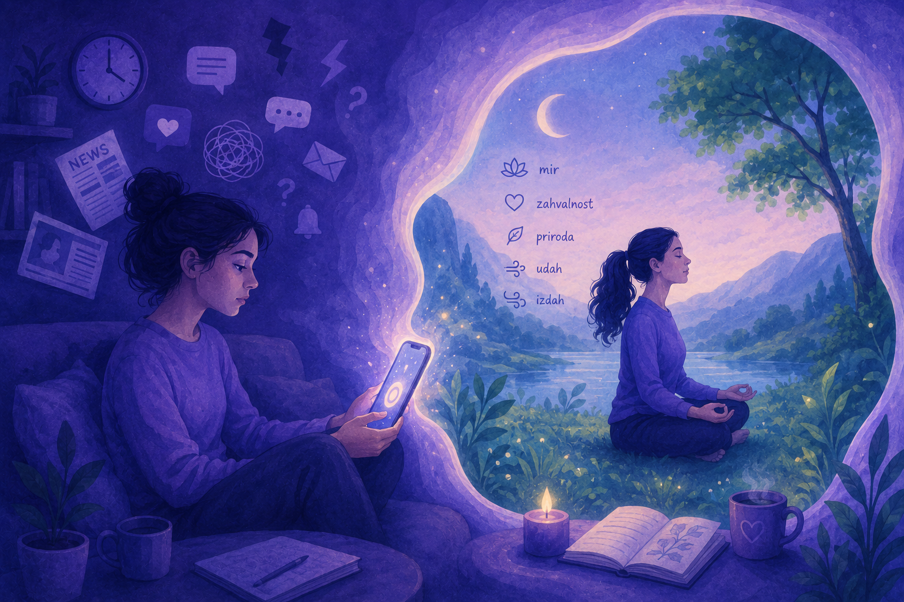
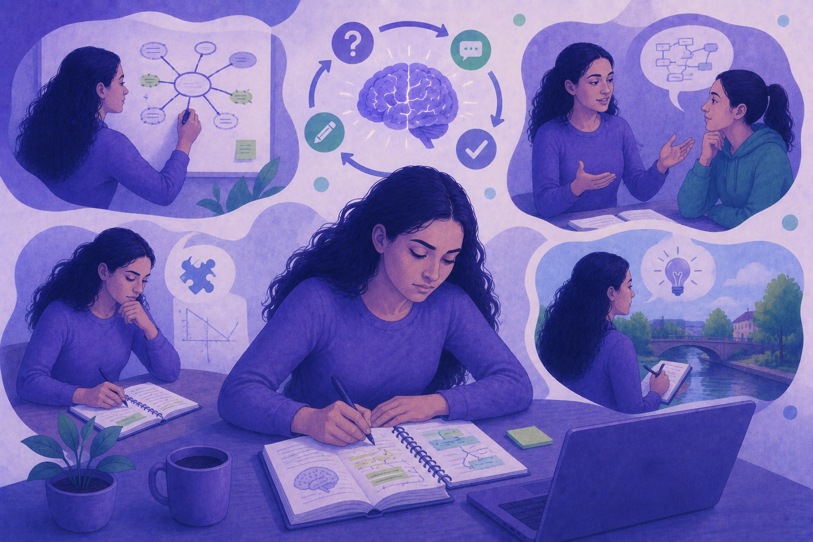
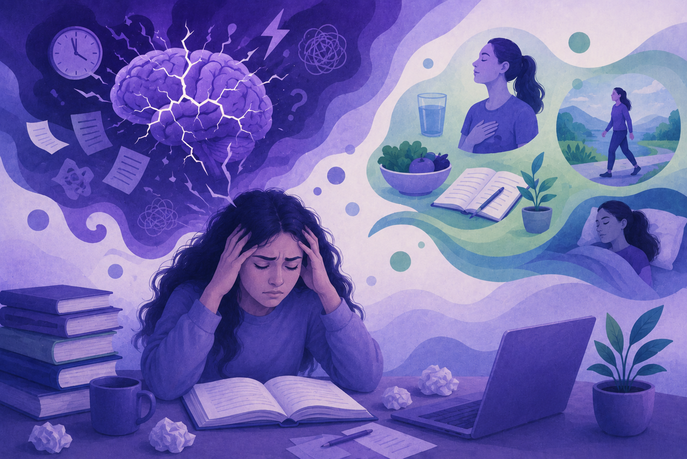

Pomodoro
Pomodoro bez panike
Kako prilagoditi blokove kad si motivisan/a, a kako kad si pod pritiskom.
Klik na karticu otvara članak preko cijelog ekrana. Zatvori strelicom „Nazad na blog”.

Kako prilagoditi blokove kad si motivisan/a, a kako kad si pod pritiskom.

Zašto stres ometa pamćenje i koje brze strategije pomažu.

Kratki vodič za studente: san, ponavljanje i manje noćnog učenja.
Četiri kolone i pet redova podataka — za odabir tehnike prema raspoloženju.
| Tehnika | Trajanje fokusa | Pauza | Kad koristiti |
|---|---|---|---|
| Pomodoro klasični | 25 min | 5 min | Početak dana, manji zadaci |
| StudentFlow motivisan | 50 min | 10 min | Duboki rad, već znaš cilj |
| StudentFlow stres | 25 min | 5 min | Visok pritisak, treba lak start |
| Timeboxing | 60 min | 15 min | Projekti sa jasnim krajem |
| 52/17 (studije) | 52 min | 17 min | Kancelarijski / dugi blokovi |
Šest ilustracija iz projekta — teme učenja, stresa i navika.






Lijevi oblak (mozak) — burnout; desni oblak — odmor i san; osoba — disanje; laptop — tehnike učenja. Zone se skaliraju s ekranom (JS).

| Datum | Ukupno | Mod | Korisnik |
|---|
Sesije se dodaju na početnoj tokom Pomodoro sesije.